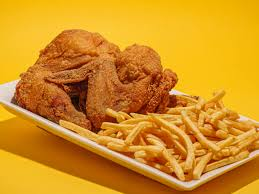

Fast Food Recipes
Home
Classic Fried Chicken

Description:
This fried chicken is crispy, golden, and packed with flavor. The outside has a crunchy, seasoned coating, while the inside stays juicy and tender. Perfect for a weekend meal, a snack, or a comfort-food craving, this classic fried chicken will leave you wanting more.
Whether served alone or paired with chips, it’s a timeless dish that brings restaurant-quality goodness straight to your kitchen.
Ingredients:
- 4 chicken drumsticks or thighs
- 1 cup buttermilk
- 1 cup all-purpose flour
- 1 teaspoon paprika
- 1 teaspoon garlic powder
- 1 teaspoon onion powder
- 1/2 teaspoon cayenne pepper (optional for heat)
- Salt and pepper to taste
- Vegetable oil for frying
Instructions:
- In a large bowl, combine the buttermilk, paprika, garlic powder, onion powder, cayenne pepper, salt, and pepper. Add the chicken pieces and marinate for at least 1 hour, or overnight for best results.
- In another bowl, mix the flour with a pinch of salt and pepper.
- Heat vegetable oil in a deep skillet or fryer to 350°F (175°C).
- Remove chicken from the buttermilk marinade, allowing excess to drip off, then dredge in the flour mixture until well coated.
- Carefully place the coated chicken pieces into the hot oil. Fry in batches to avoid overcrowding.
- Cook for about 12-15 minutes, turning occasionally, until the chicken is golden brown and cooked through (internal temperature should reach 165°F or 74°C).
- Remove the chicken and drain on paper towels. Let rest for a few minutes before serving.